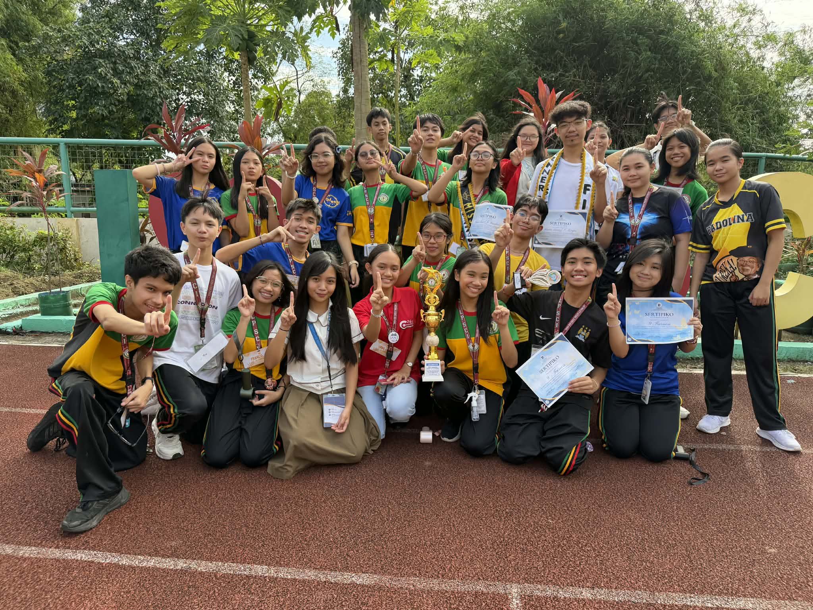
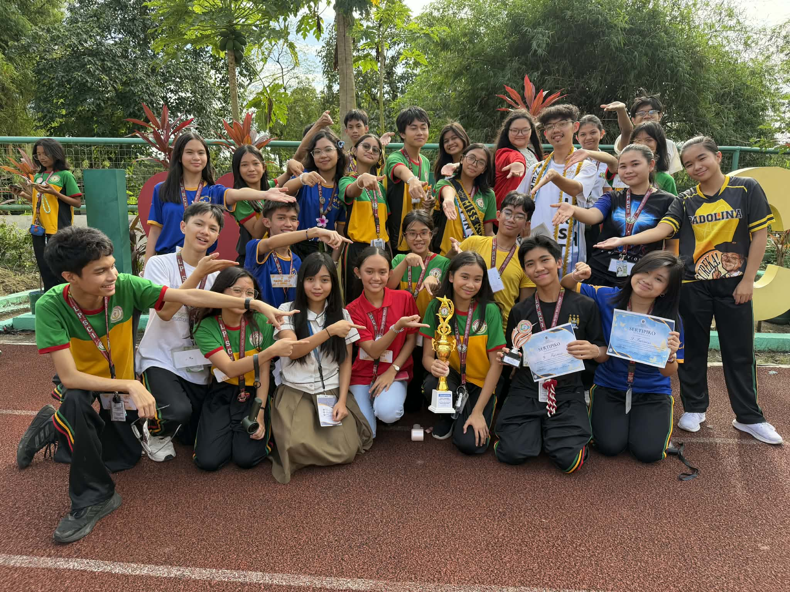

Reflection on V-Pop!
What is the most important thing I learned from the event?
The most important thing I learned from the V-Pop event was the importance of leadership, teamwork, and creativity. Since I was responsible for leading my section, I realized that organizing a group performance requires more than just having a good idea. It requires patience, communication, and the ability to motivate others to work together. I also learned that trying something new can make a performance more unique and memorable. For example, I suggested that we use chairs as props in our dance, which was a different concept compared to the usual performances. Seeing how everyone worked together to bring that idea to life taught me that teamwork and creativity can produce great results.
How can I apply what I learned in real-life situations?
I can apply what I learned from this experience by becoming more confident when sharing my ideas and by working well with others in group situations. Leadership is an important skill that can be used in many parts of life, such as school projects, organizations, or even future jobs. I also learned that when working with a team, it is important to listen to everyone’s ideas and support each other. By practicing teamwork and leadership now, I can develop the skills that will help me handle responsibilities and challenges in the future.
Did I actively participate in the event? How?
Yes, I actively participated in the event by taking on a leadership role in our section. I helped create the concept of the performance by suggesting that we use chairs as props to make the dance more creative and unique. I also choreographed the routine and taught the choreography to my classmates during our practices. This required a lot of time and effort because I had to make sure that everyone understood the steps and performed them together. Even though it was challenging, I enjoyed seeing our performance improve during each practice until it finally came together.
If I were to teach this topic or subject to a classmate, how would I explain it?
If I were to explain this to a classmate, I would say that V-Pop is not just about performing a dance. It is also about showing important values such as cooperation, creativity, and determination. Each member of the group plays an important role in making the performance successful. Through V-Pop, students learn how to work together, express themselves creatively, and support each other as a team.
Why is it important to have events like this?
Events like V-Pop are important because they give students opportunities to express their creativity and talents while also developing important life skills. Activities like this help students practice teamwork, leadership, and communication. It also strengthens the bond between classmates because everyone works together toward a shared goal. In addition, events like V-Pop make school more enjoyable and memorable because students can participate in activities outside of regular classroom lessons.

